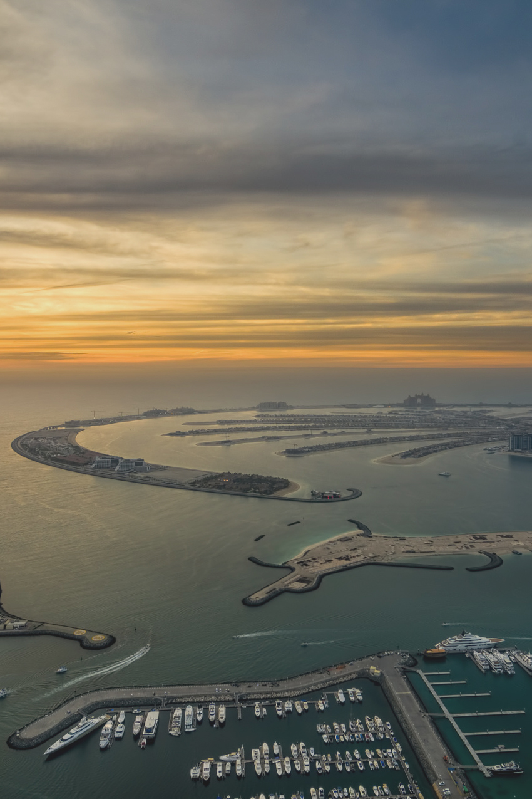
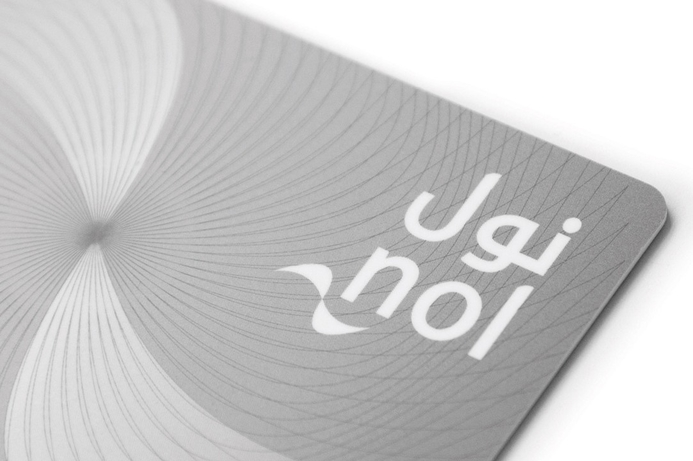
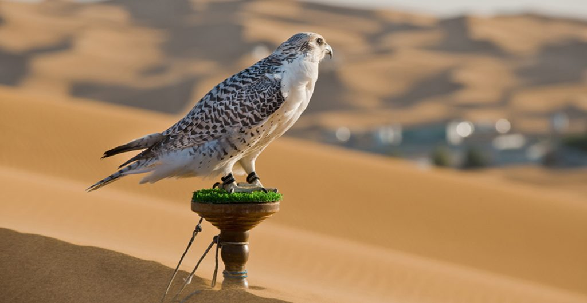

Shout About UAE



Traditions
The rich traditions of the seven emirates are a big part of life. The country is proud of its history of fishing, boating, and trading, which used to dominate life in the UAE for centuries. The souqs, traditional markets, are an essential place to visit. Many of them have been preserved in their original state, giving a picturesque impression of what life used to be like. Dates, camels, Arabian horses, and falconry are still important in the UAE today.Transport
Taxis
Taxis are the most important mode of transportation and are available almost all over the UAE, for a relatively cheap price compared to other major cities. The UAE has a very well-organized system, and in Dubai the taxis are regulated by the government. All taxis have a fare meter. The fare per kilometer is fixed at around 1.80 AED per minute. The fixed starting fare is about 5 AED; if you take a taxi from the airport it’s 20 AED. You can find several taxi stands throughout the cities, around various stations, and outside the airports. These stands make it easy to find a taxi, but you can also just stop one on the street (which is cheaper).Buses
Taxis aren’t the only important modes of transportation in the UAE. Buses are also very important for the public transportation network. The biggest bus networks are in Dubai and Abu Dhabi. The bus networks in the other emirates mainly consist of buses connecting the emirates with each other.Metro
Dubai is the leader of the UAE when it comes to public transportation. It’s the only city that has a tram and metro network. The Dubai Metro has been around a little longer, since 2009. The network also has two lines — a red line and a green line — covering 70 km and 49 stations. The red line stops at stations between Rashidiya (close to Dubai International Airport) and UAE Exchange, while the green line runs from Etisalat Metro Station to Dubai Healthcare Center. You can switch between the tram and metro at DAMAC Metro Station and Jumeirah Lakes Towers Metro Station. These stations are both on the red metro line.Nol
If you’re traveling in Dubai, you can use the Nol Card. There are four different types of this card: Red for tourists and visitors, Silver for frequent travelers, Gold to get access to the Gold class in trams and metro trains, and lastly Blue for frequent travelers who want their credit secured. Purchasing this card is easy: decide which type of card fits you and purchase it at a ticket office, vending machine, an RTA Customer Service Center, from a sales agent, or online.Good School(s)
- Dubai International Academy
KHDA link
School Website
Good Hospitals
- Emirates Hospital
Hospital Website - Mediclinic
Hospital Website - MedCare
Hospital Website - Aster Hospitals
Hospital Website - Al Zahra Hospital
Hospital Website - NMC Healthcare
Hospital Website - Thumbay Hospital
Hospital Website
Emergency Numbers
- Police: 999
- Ambulance: 998
- Fire: 997
Communities
Appartments
- Dubai Marina
- Jumeirah Lakes Towers (JLT)
- Downtown Dubai
- Palm Jumeirah
- Jumeirah Village Circle
- Dubai Silicon Oasis
- Dubai Sports City
- Jumeirah Beach Residence
Villas
- The Springs
- Arabian Ranches
- Mirdif
- Al Barsha
- Jumeirah
- Jumeirah Park
- Meadows
- Palm Jumeirah
Facts
- The UAE has a minister of state for happiness and wellbeing.
- More than 88% of the residents are expats
- No taxes!
- Dubai International Airport is the third busiest in the world
- The UAE is the safest country in the world